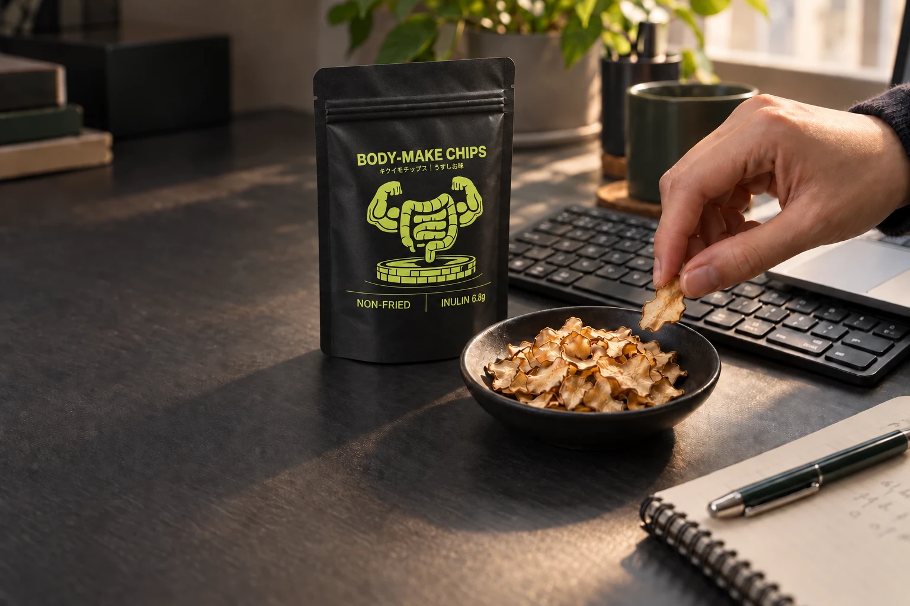
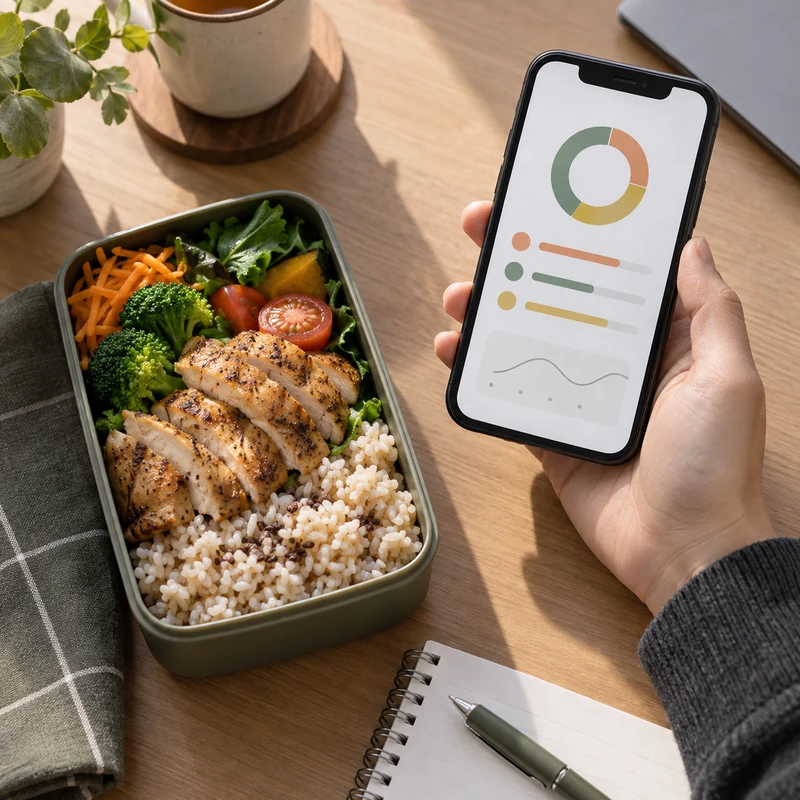
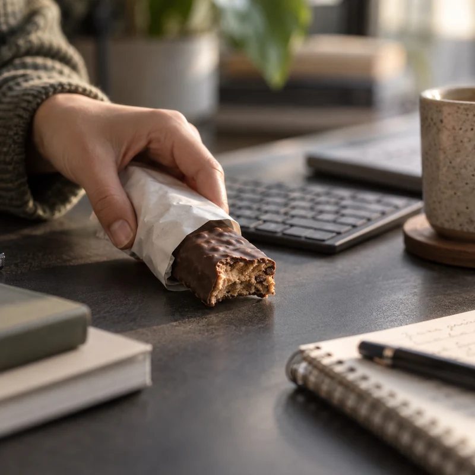
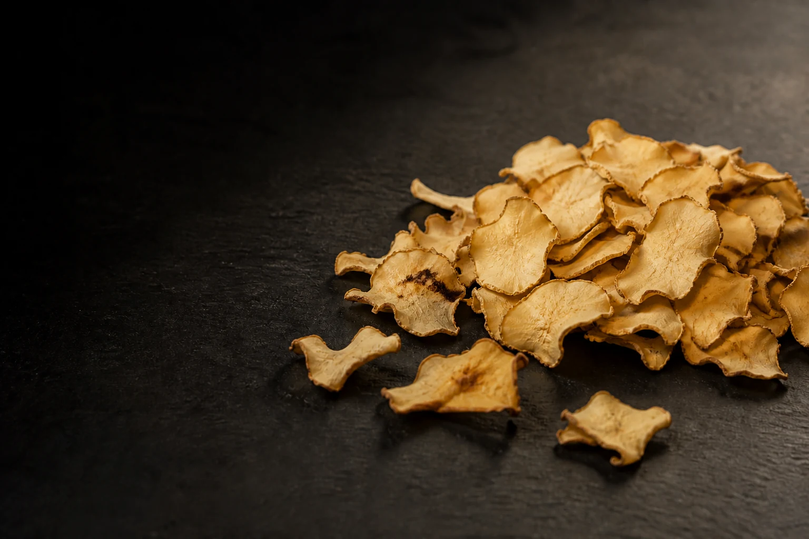
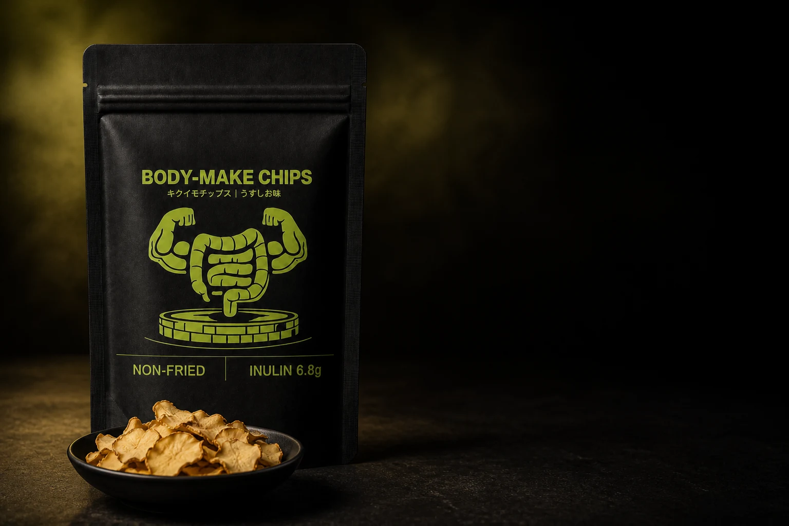
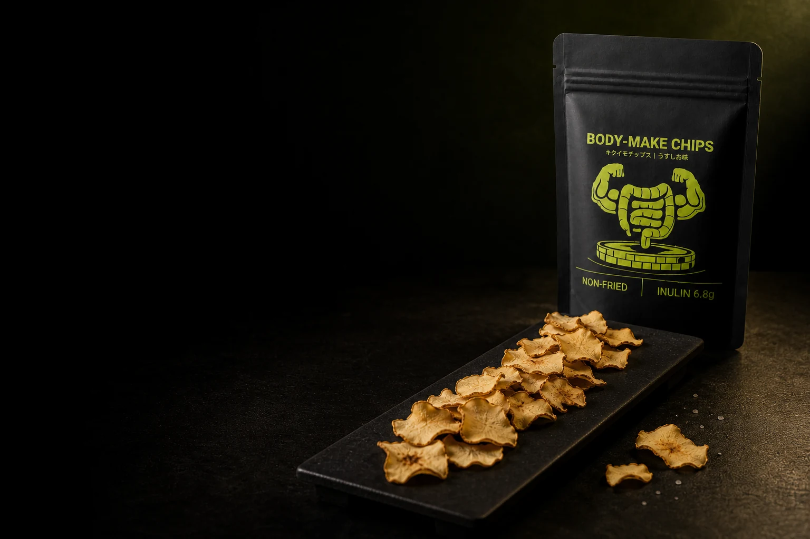

15時のデスク。
小腹が空いても、
お菓子は我慢。
BODY-MAKE CHIPS / USUSHIO
デスクの上に、

1袋15g ｜ 38kcal食物繊維9.5g （うちイヌリン6.8g）
国産キクイモのうすしおチップス。
{{priceLabel}}
{{trialName}} {{trialPrice}}円（{{priceTerms}}）
現在、{{saleLabel}}です。
画像は試作品をもとにしたイメージです。
THAT SOUNDS LIKE ME
小腹が空いても、
お菓子は我慢。

間食で、
崩したくない。

ポテチ欲は、
満たされない。
PFC＝たんぱく質・脂質・炭水化物のバランス。
食べたい気持ちも、ゆずれない基準も。
どちらも、サポートします。

TASTE FIRST
国産キクイモを薄くスライス。
油を加えず、ノンフライで仕上げました。
サクサクと、うすしお。
キクイモのほのかな甘みとうま味を、
仕事の合間に、ひと口ずつ。
画像は試作品をもとにしたイメージです。
GOOD REASONS TO CRUNCH
イヌリン 6.8g
すべて１袋15gあたりの分析値
栄養成分を詳しく見るA LITTLE BAG. A BIG PLUS.
いつもの食事に、
この一袋を足すと。
平均18.1g ＋ １袋9.5g ＝ 27.6gの計算例です。平均値は個人の摂取量を示すものではありません。
25gはWHOが成人に推奨する、食品から摂る食物繊維の一日の目安です。日本の食事摂取基準では、目標量を年齢・性別ごとに定めています。
出典：厚生労働省「食物繊維の必要性と健康」（2024年国民健康・栄養調査：20歳以上の平均18.1g／日）／ WHO 食物繊維の推奨（2023年）
A NOTE FROM THE MAKER
１袋に 6.8 g
１袋15gの重量比：イヌリン約45％
イヌリンは、腸内環境の研究で注目される「プレバイオティクス」の一つ。 ビフィズス菌などの善玉菌のエサとなる食物繊維で、ヒトの研究でもビフィズス菌の増加が報告されています。一方、腸内での発酵に伴ってガスも生じるため、体質や食べる量によっては、おなかの張りを感じることがあります。初めての方は少量から、おなかの様子をみながらお楽しみください。
研究の説明はイヌリン原料に関するもので、本品そのものを用いた試験ではありません。イヌリン量は、総フラクタン分析により算出しています。
FROM ONE CHIPS LOVER
ポテチが好きです。食べることも、好きです。
けれど、体づくりのために我慢しようとしても、私には続けられませんでした。食べる楽しみを手放せず、トレーニングから離れたこともあります。
それなら、我慢する代わりに、
自分が納得して食べられる間食をつくろう。
好きな食感と、選びたい栄養。その両方を目指して、キクイモに着目しました。
キクイモ加工に20年携わる製造パートナーと、約２年間、試作を重ねました。そうしてようやく生まれたのが、BODY-MAKE CHIPSです。
我慢が苦手なポテチ好きの思いを、この一袋に。
食事に気をつかう人にも、サクサクを楽しむ選択肢を。

BODY-MAKE CHIPS / USUSHIO
LINEUP
販売開始に向けて、３つのセットをご用意しています。
販売予定価格は、すべて{{priceTerms}}です。
現在、{{saleLabel}}です。まだご注文いただけません。
販売開始時は、すべて買い切りでのご用意です。定期購入ではありません。
初めての方は少量から、体調に合わせてお楽しみください。
{{notice}}
THE DETAILS
| 栄養成分 | １袋15gあたり |
|---|---|
| 熱量 | 38kcal |
| たんぱく質 | 1.4g |
| 脂質 | 1.2g |
| 炭水化物 | 10.3g |
| うち糖質 | 0.8g |
| うち食物繊維 | 9.5g |
| 食塩相当量 | 0.15g |
| カリウム | 420mg |
| 成分 | １袋15gあたり |
|---|---|
| 食物繊維のうちイヌリン | 6.8g |
| ポリフェノール | 107mg |
分析試験結果を１袋15gあたりに換算。
イヌリン6.8gは、食物繊維9.5gに含まれます。
イヌリン量は、総フラクタン分析により算出しています。
ポリフェノールはFolin-Denis法による没食子酸換算値です。
| 商品名 | BODY-MAKE CHIPS |
|---|---|
| 商品の説明 | 国産キクイモのうすしおチップス |
| 内容量 | １袋15g |
| 原料の説明 | 国産キクイモを使用 |
| 製法の特徴 | ノンフライ・油不使用 |
FAQ
国産キクイモを使った、うすしお味のチップスです。
じゃがいものポテトチップスとは原料が異なります。サクサクした食感をお楽しみください。
油を加えず、ノンフライで仕上げています。
なお、油不使用は脂質ゼロという意味ではありません。脂質は１袋15gあたり1.2gです。
午後の仕事中など、間食を楽しみたいときにお召し上がりください。
初めての方は少量から、体調に合わせてお楽しみください。
体質や食べる量によって、おなかの張りなどを感じることがあります。
現在、{{saleLabel}}です。{{notice}}
お試し２袋・10袋セット・30袋セットの販売予定価格には、いずれも送料が含まれています。
販売開始後、お試し２袋の購入回数に制限は設けません。
販売開始時は、すべて買い切りでのご用意です。定期購入ではありません。
10袋セット・30袋セットは追跡サービス付き、お試し２袋は追跡サービスなしでのお届けを予定しています。

YOUR NEXT BREAK
サクサク、うすしお。
国産キクイモのBODY-MAKE CHIPS。
{{priceLabel}}
{{trialName}} {{trialPrice}}円（{{priceTerms}}）
現在、{{saleLabel}}です。
画像は試作品をもとにしたイメージです。
{{saleLabel}}｜{{trialName}} {{trialPrice}}円（{{priceTerms}}）
セットを見る